Dieser Teil der Anleitung ist hier auch in Videoform verfügbar
Aufbau
Insgesamt besteht das Gadget aus den folgenden Bauteilen:
- Platine
- Holzbrett
- Taster
- Lautsprecher
- Steckleiste
- ESP8266
- DHT11 (Sensor)
- Verbinder
- MQ135 (Luftqualitätssensor)
- LED-Matrix
Diese Bauteile müssen korrekt verdrahtet bzw. miteinander verbunden werden, damit die entsprechenden Funktionen gegeben sind. Diese Aufgabe übernimmt die Platine für uns. Auf ihr befinden sich Leiterbahnen, die die Verbindungen zwischen den Modulen und dem Mikrocontroller herstellen. In der folgenden Abbildung ist der Schaltplan des Gadgets zu sehen, also die Verbindungen zwischen den Bauteilen, die auf der Platine umgesetzt sind.
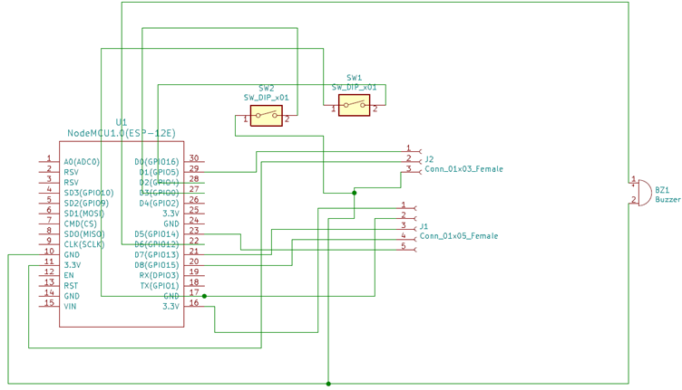Als erstes werden die Steckverbinder für den Microcontroller, die Sensoren und die LED-Matrix verlötet. Diese müssen zunächst mit einem Seitenschneider auf die richtige Länge gekürzt werden.
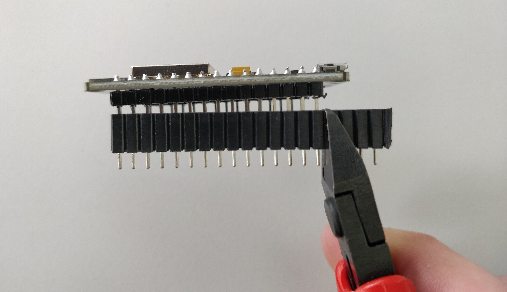Die Steckleisten für den Mikrocontroller werden auf diesen aufgesteckt, dann wird das Ganze an der markierten Stelle in die Platine gesteckt und von der Rückseite verlötet.
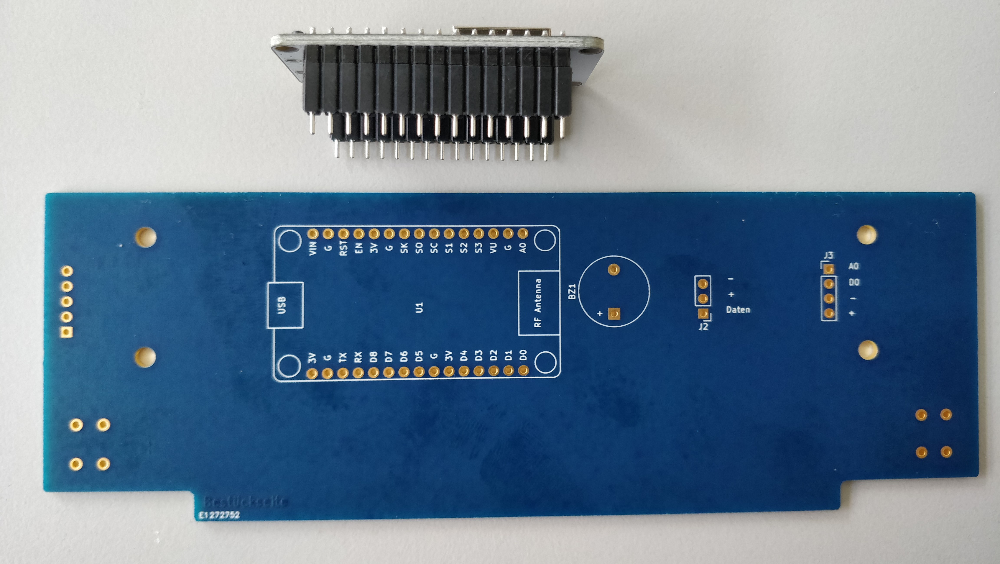Die Steckleisten für die Sensoren und die LED-Matrix werden einzeln in die markierten Steckplätze (J1-3) eingesteckt und verlötet. Achtung bei der LED-Matrix: diese sitzt auf der Vorderseite der Platine, während alle anderen Steckleisten auf der Rückseite der Platine angebracht werden.
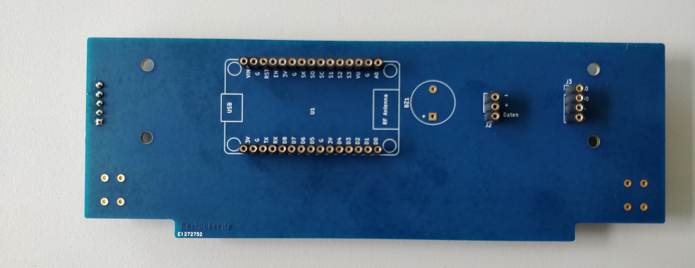 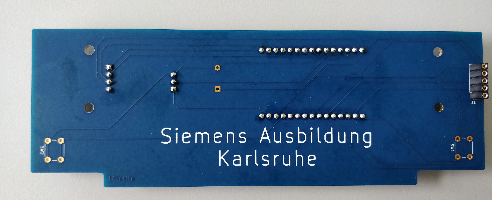Nun werden die Taster verbaut, diese werden von der Vorderseite durch die Platine gesteckt und auf der Rückseite verlötet
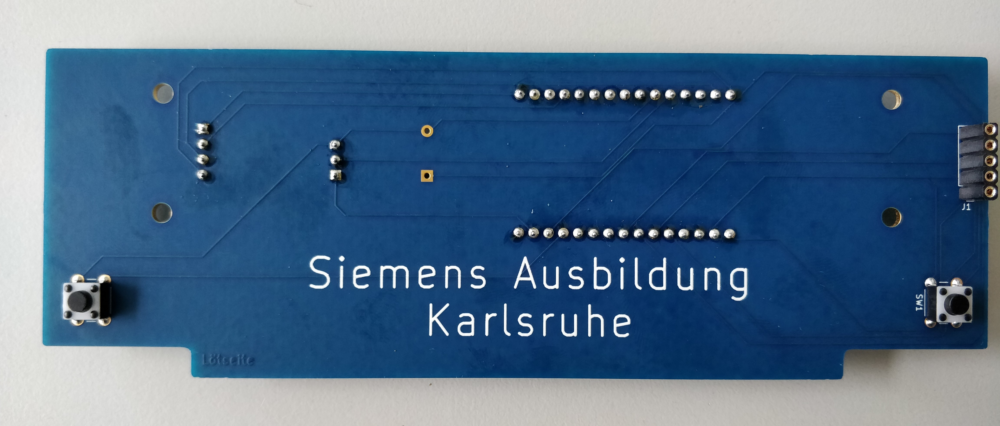Als letztes wird der Piezo-Lautsprecher verlötet, hierbei muss auf die Polarität geachtet werden: Das auf die Platine aufgedruckte "+" muss mit dem "+" auf dem Lautsprecher übereinstimmen. Nachdem er durch die Platine gesteckt und verlötet wurde, können die überstehenden Beine mit einem Seitenschneider gekürzt werden.
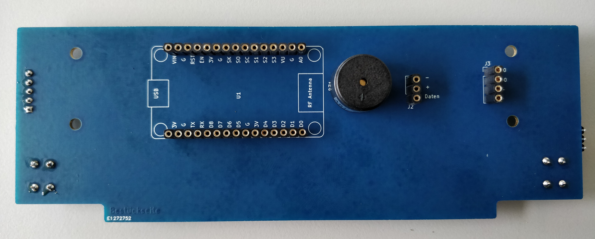Nun kann das Gadget zusammengebaut werden. Zunächst werden die Abstandhalter in die Löcher in der LED-Matrix gesteckt und der Winkelsteckverbinder auf die Pins der LED-Matrix gesteckt.
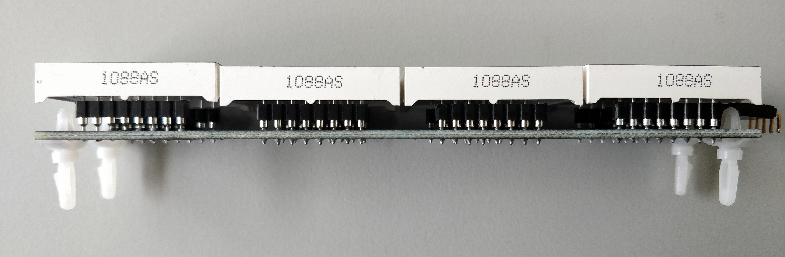 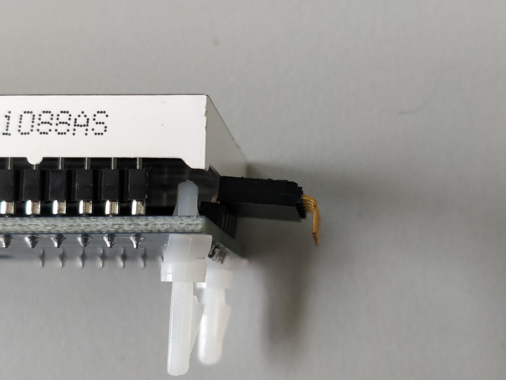Anschließend wird die LED-Matrix auf die Platine aufgesteckt.
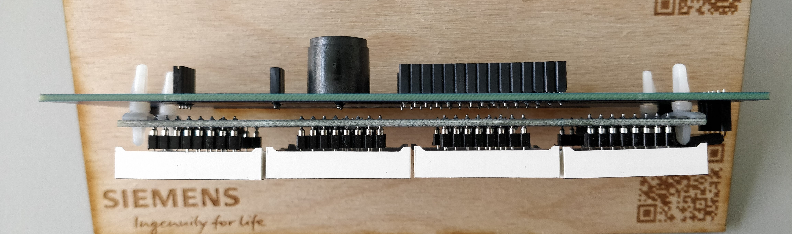 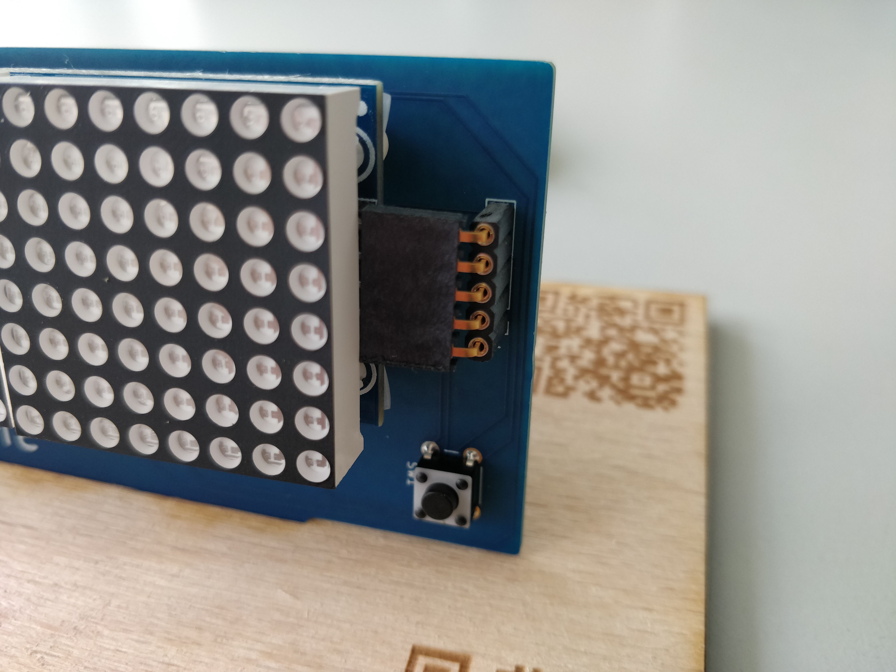Nun können auch die restlichen Komponenten auf ihre Steckplätze gesteckt werden.
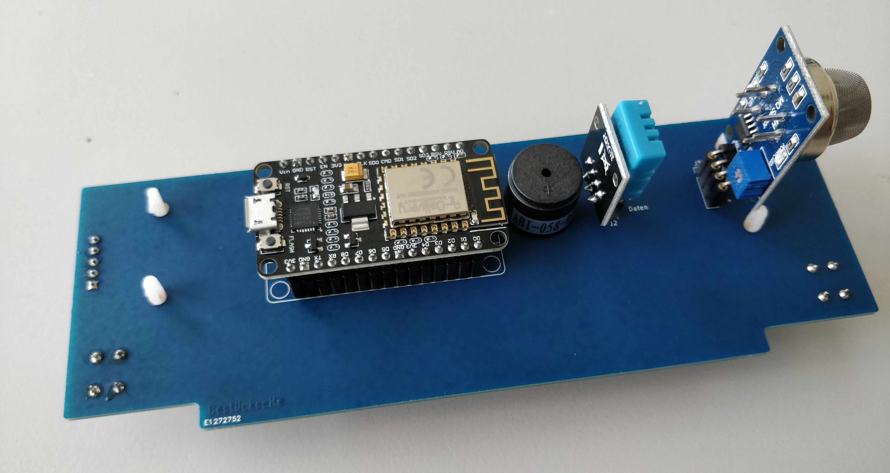Zuletzt wird das Gadget schräg in das Holzbrett gesteckt, dann ist es fertig zusammengebaut.
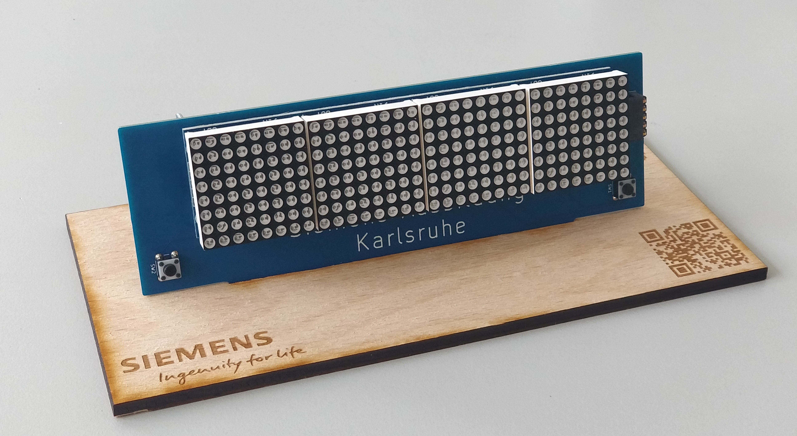